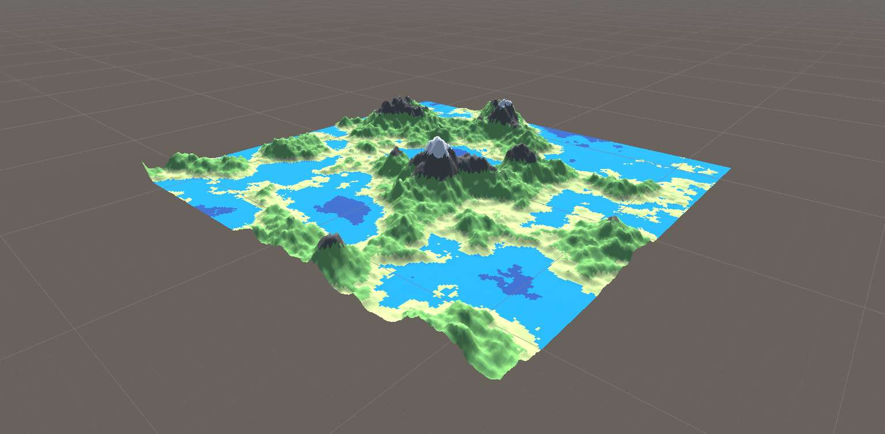
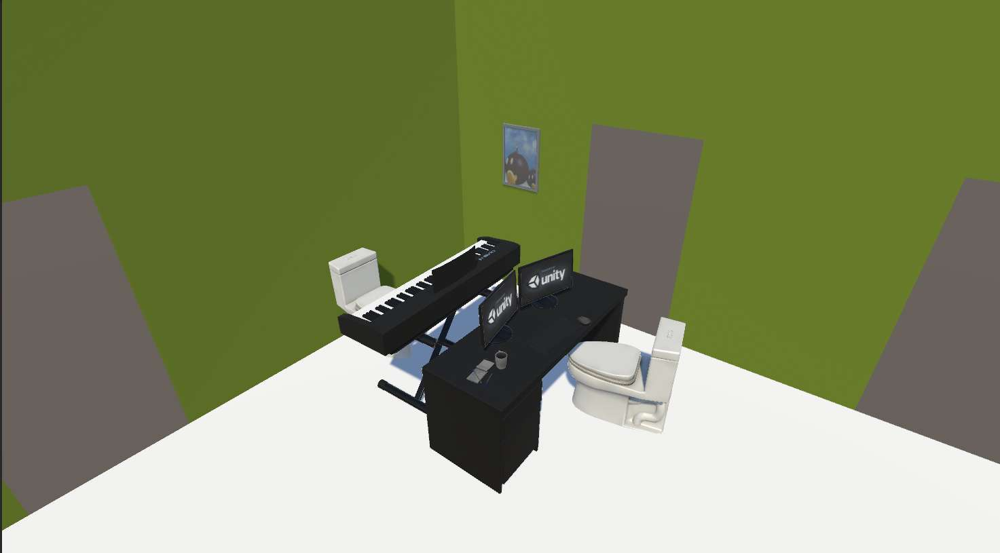
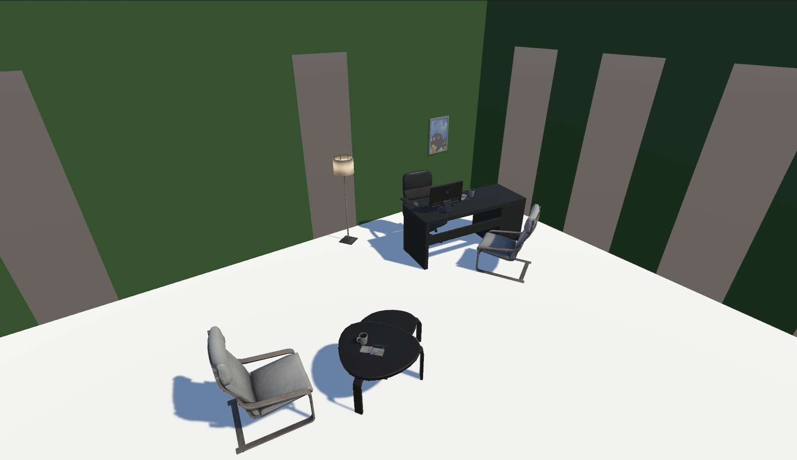

Early projects
These early projects let me experiment with procedural generation and data structures, testing my programming and design skills. Although smaller than my main works, they were fundamental for learning, iterating and laying the groundwork for the more complex projects I developed later on.
Taller Unity TryIt! 2024
- Period
- January 2024–March 2024
(3 months) - Tool(s) used
- Unity
- Team size
- 4 people
- Role(s)
- Lead developer
Speaker
The project

This project involved conceiving and delivering a hands-on Unity workshop taught at the Try It! congress at the Universidad Politécnica de Madrid (UPM). The activity focused on teaching the fundamentals of procedural terrain generation from algorithmic noise, as well as implementing a dynamic character controller. It became one of the most attended workshops of the edition.
My contribution
I worked alongside 3 teammates on the pedagogical and technical structure of the workshop. My main contributions included:
- Template design and base repository
I developed the clean, structured code skeletons that attendees completed during the workshop, ensuring the content was accessible to both beginner and intermediate profiles. - Git management and teaching
I set up the version control repositories on GitHub to easily distribute the teaching materials. I also acted as the lead speaker, presenting the mathematical concepts behind procedural generation to the audience.
What I learned
- Designing modular code architecture for teaching: creating clear C# templates meant to be completed by others in a guided way.
- Public Git repository management: structuring work branches and public releases to distribute code without issues live.
- Technical communication and public speaking: explaining complex math and programming concepts in real time to an audience with varied backgrounds.
GAEV
- Period
- September 2023–May 2024
(9 months) - Tool(s) used
- Unity
- Team size
- 4 people
- Role(s)
- Lead developer

The project

GAEV was my first project developed within the MadHCI Lab research environment. It's an authoring tool that lets users procedurally generate rooms, place furniture and export the result to data files. The system fully decouples editing from reading through two independent modules: one geared toward creation/serialization and another toward runtime loading.
My contribution
As lead developer on a team of 4, my tasks covered both the software architecture and the data flow design:
- Software architecture and JSON serialization
I designed the JSON-serializable class structure to save room and 3D object attributes. I ensured a stable bidirectional data pipeline that faithfully recreated saved scenes. - Lab coordination
I set up regular team meetings to align progress with the technical requirements set by the MadHCI Lab research team.
What I learned
- Advanced C# and JSON serialization: implementing efficient data persistence patterns for dynamic scenarios in Unity.
- Module decoupling: separating runtime editing logic from the consumption/rendering module.
- Working under lab requirements: coordinating deliverables through regular meetings to meet rigorous specifications.